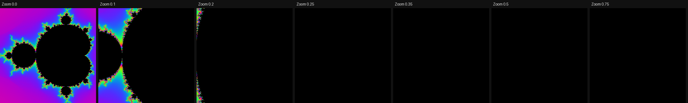
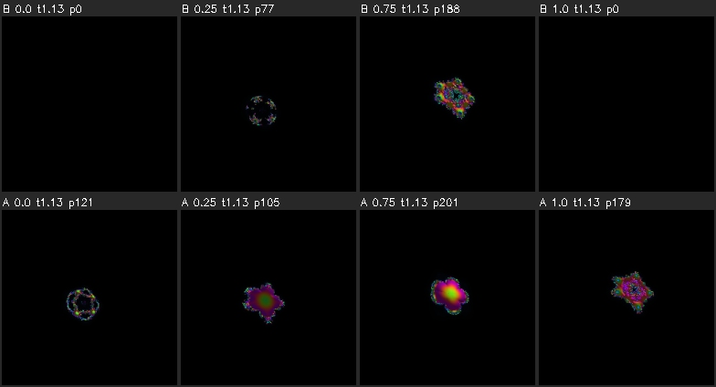
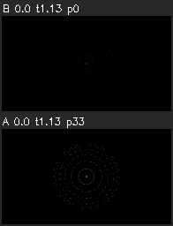
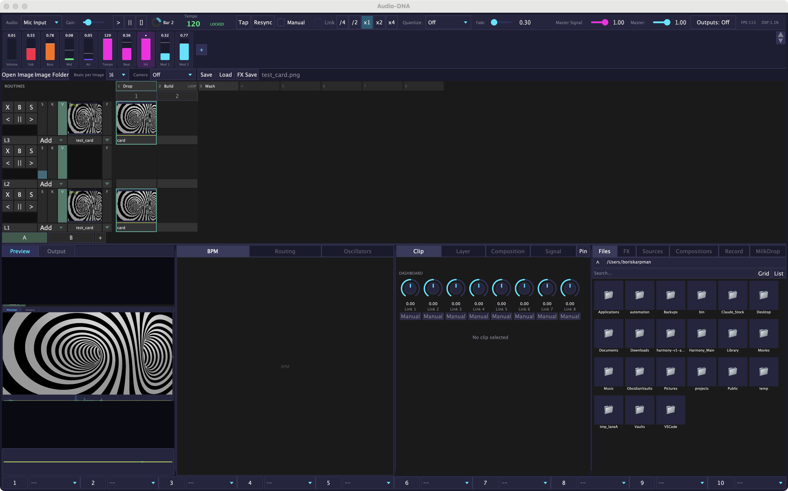

Every item already has a default built in. Say nothing and the default stays. This page is updated in place; refresh to see changes.
1. Fractal Zoom goes black for most of the knob (Mandelbrot, Burning Ship, Julia) — your call
At the starting centre, turning Zoom up dives into the black inside of the set. On Mandelbrot everything past about 0.2
is solid black; on the three sources it is 60-75% of the knob. This session did not change it, because the fix changes what
Zoom / Center / Dive mean. The tests list these black stretches strictly, so the moment it is fixed they flag themselves for removal.

Mandelbrot, starting centre, Zoom 0 → 0.75 (today)
Dive toward edge detail — the zoom heads for the colourful edge instead of the black inside; the picture at Zoom 0 does not change, so every saved show looks the same until you turn Zoom. (Recommended)
Move the starting centre onto the edge — also fixes it, but the starting picture changes.
Keep as is.
Which one? Default until you say: keep as is (nothing changed).
2. Two more fractal knobs that still show little or nothing — your call
Cross Section on Sierpinski Tetrahedron shows nothing, and on Kaleidoscopic IFS only faint specks. Options: bigger specks inside the slice (recommended) / remove those two slice knobs / keep.
Spirograph Inner Radius blinks to black at 8 of its 25 positions, because the curve is drawn as dots. Option: draw it as connected lines (changes the starting look) / keep.
Defaults: keep both as they are, listed in the tests as waiting for you.
3. Fractal and source knobs that were fixed or removed (look when you next use them)
Starting pictures are unchanged: every source's saved default renders byte-for-byte the same as before.
Fixed: Cross Section on Mandelbulb, Apollonian, Julia 3D, Menger Sponge, Burning Ship 3D now shows a slice at both ends; Iterations at the bottom on Tetrahedron / IFS; Mandelbrot Power above 1/4; Newton Power stops at 6 roots; Astral Grid Warp now bends the grid (it did nothing); Spirograph / Lissajous Thickness at 0 is now a hairline.
Removed (did nothing or went black): Kaleidoscopic IFS "Fold Type" (a one-line repair was tried first and failed), Band Tower "Reflection", Spectrum Landscape "Smoothing". Old shows load fine without them.
Faint on a projector? The design critic flagged two of the fixed extremes as faint: IFS Iterations at 0 and Spirograph/Lissajous Thickness at 0. They draw now, but dimly.

Mandelbulb Cross Section: top row before (black at both ends), bottom row now

Spirograph Thickness, before / now
Anything that reads wrong on stage? Default: as shipped.
4. Routines: no more freeze at a routine start or loop point
A routine that switched a layer back to a photo used to freeze the whole UI for 40-180 ms at every start and every loop point
(the grid re-read every photo from disk each time). Now thumbnails are read once, in the background: the measured freeze is 0.2 ms.

The grid on the new build — thumbnails in the cells and layer strips
Try: load a show whose grid holds several big photos (one 4K still). Thumbnails should appear within a blink.
Try: fire a looping routine that switches a layer back to a photo, with Start: Ease and then Start: Jump. The grid, meters and faders should keep moving at every start and loop point.
A photo never shown before this session shows the empty-cell look for about 10-60 ms, once.
Small feel change: when a recorded move runs right up to the loop end, the Ease glide back now starts from the recording's own end value (0.9 in the test) instead of the last sampled value (0.886). A move that a freeze used to skip now always lands.
Feels right? Default: as shipped.
5. Tap / type a tempo, press Record straight away
Nothing to see on screen. Before: if a tempo was set and Record pressed within ~10 ms (a script, OSC, a MIDI pad doing both),
the take sometimes started "before the tempo was known", and cutting a routine from bar 1 was refused. Now the take always starts with that tempo.
Try if you like: set a BPM and press Record at once, stop after a few seconds, save a routine from bar 1. It should save.
6. New pictures appearing — photos now load in the background (landed)
Before: the first time a photo was shown, the whole output froze while it was read: about 36 ms at 1080p and 136 ms at 4K
(two to eight dropped frames). Re-triggering a photo from the grid froze it again every time. Now photos are read in the background:
the longest frame stays at 1-6 ms.
A photo that has never been shown now holds the layer's last picture for about 5 frames (1080p) or 15 frames (4K) while it loads, instead of the whole output freezing.
A dissolve onto such a photo (or an image sequence) now starts when it lands (up to about 0.1 s late at 4K), then runs its full length. Before, it jumped half-way.
Loading a composition now reads all its photos in the background (up to 1 GB); switching compositions frees the old ones.
Save Snapshot never waits for a loading photo; it saves what is on screen at that moment.
Slideshow: the next photo is read ahead, so the beat advance should not stutter. Nobody could check this with the real UI; please look.
Does the short hold on a brand-new photo, and the slightly late dissolve start, feel right? Default: as shipped (hold, no freeze).
7. Session note
The Fable planning quota ran out early this session, so the four plans were written by Opus instead. Each was still attacked
by two independent reviewers before building and checked live afterwards. To get Fable back for planning, top up with /usage-credits.